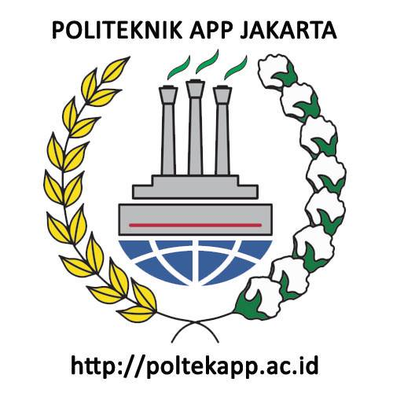
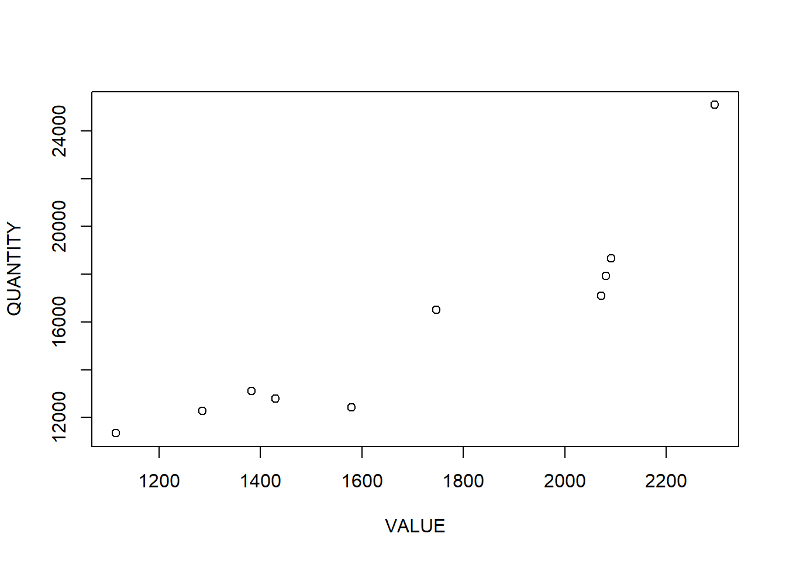

library(tidyverse)
library(readxl)
library(writexl)ANALISIS PENGARUH KUANTITAS TERHADAP NILAI EKSPOR KOPI KE NEGARA CHINA
Metode Penelitian Politeknik APP Jakarta

1 Pendahuluan
1.1 Latar belakang
Kebutuhan akan produk ekspor di seluruh dunia telah meningkat pesat dalam beberapa tahun terakhir. Salah satu produk ekspor yang paling banyak dicari adalah kopi. Kopi telah menjadi salah satu produk ekspor yang paling populer dan paling menguntungkan di dunia. Negara China adalah salah satu tujuan utama untuk ekspor kopi. Dalam 15 tahun terakhir, meskipun jumlah produksi kopi semakin meningkat, namun pangsa ekpor kopi Indonesia semakin menurun, dari 5,1% pada 2005, menjadi 3,8% pada tahun 2015 (Rosiana et.al, 2017). Penurunan tersebut seiring dengan pergeseran tujuan ekspor kopi Indonesia. Pada tahun 2005, Amerika Serikat, Jepang, dan Jerman menjadi tujuan utama ekspor kopi Indonesia, namun hari ini turun, menjadi sekitar sepertiga dari total ekspor kopi Indonesia (Jamil, 2019). Sebagian alasannya adalah penurunan daya saing akibat diterapkannya peraturan keamanan makanan yang lebih ketat di Amerika Serikat, UE dan Jepang, seiring dengan penerapan ekonomi hijau dan prinsip keberlanjutan SDGs. Sebagai contoh di Jerman, peraturan terkait SDGs ini berkontribusi pada penurunan impor sebesar 30 juta kilogram sejak tahun 2009. Trend tersebut telah menggeser tujuan ekspor kopi Indoensi untuk memenuhi permintaan yang lebih kuat dari pasar negara ASEAN, seperti Malaysia dan Thailand, serta ekonomi regional utama lainnya seperti Italia, Rusia dan Mesir (OECD/ERIA, 2018). Namun tren terbaru, menunjukkan ekspor ke Italia meningkat secara signifikan, karena pembuat kopi dan penjual kopi (Cafe) khas Italia menggunakan campuran Robusta Indonesia yang mengandung paling sedikit pestisida dibandingkan produk kopi negara lainnya (TPSA, 2017).
Kewirausahaan petani kopi sebagai UMKM yang berperan berkontribusi langsung pada laju pertumbuhan ekonomi, sejalan dengan teori yang dikembangkan oleh Kirzner, Hausmann dan Rodrik, bahwa wirausahawan adalah agen penting dalam menggerakkan proses penemuan yang diperlukan untuk menghasilkan pertumbuhan dan menyeimbangkan pasar (Patrick, 2017). Sebagai contoh, kekuatan wirausaha UMKM yang menjadi unggulan negaranya masing-masing, seperti UMKM garmen di Bangladesh, perangkai bunga di Kolombia, dan pemrograman teknologi informasi (TI) di India. Teori ini mendukung gagasan bahwa kewirausahaan menghasilkan pertumbuhan dengan menciptakan peluang ekonomi baru, merangsang persaingan dan mendorong peningkatan produktivitas dalam suatu ekonomi (Irawan, 2020). Fenomena jaringan produksi atau rantai nilai (GVC) berdasarkan pada teori fragmentasi, yang dikenal sebagai pembagian produksi lintas-batas pasar, daerah, dan negara. Teori fragmentasi berfokus pada berbagai lokasi proses produksi dan lokasi assembling sebagai intinya (Kano, Tsang, & Yeung, 2020)
Meskipun kopi telah menjadi salah satu produk ekspor yang paling menguntungkan di dunia, ada beberapa masalah yang terkait dengan ekspor kopi ke Negara China. Masalah utama yang dihadapi adalah bahwa nilai ekspor kopi ke Negara China sangat bergantung pada kuantitas produk yang diekspor. Dengan meningkatnya persaingan antar produsen kopi di dunia, produsen kopi di seluruh dunia berjuang untuk meningkatkan kuantitas produknya untuk meningkatkan nilai ekspor kopi ke Negara China. Namun, masih tidak jelas bagaimana kuantitas produk berpengaruh terhadap nilai ekspor kopi ke Negara China. Hal ini menjadi masalah yang harus dipecahkan karena kuantitas produk yang diekspor dapat mempengaruhi nilai ekspor kopi ke Negara China. Oleh karena itu, penting untuk menganalisis pengaruh kuantitas terhadap nilai ekspor kopi ke Negara China agar dapat meningkatkan nilai ekspor kopi ke Negara China. Oleh karena itu, tujuan penelitian ini adalah untuk menganalisis pengaruh kuantitas terhadap nilai ekspor kopi ke Negara China.
Penelitian ini akan menggunakan data historis dan survei untuk mengumpulkan data yang diperlukan. Penelitian ini juga akan menganalisis bagaimana kuantitas produk yang diekspor dapat mempengaruhi nilai ekspor kopi ke Negara China. Penelitian ini akan menggunakan analisis statistik untuk menganalisis data yang diperoleh. Penelitian ini akan memberikan wawasan kepada produsen kopi tentang bagaimana meningkatkan kuantitas produk mereka untuk meningkatkan nilai ekspor kopi ke Negara China. Hasil penelitian ini juga akan memberikan informasi penting untuk membantu produsen kopi meningkatkan nilai ekspor kopi mereka ke Negara China.
Metodologi yang akan digunakan dalam penelitian ini adalah analisis regresi. Analisis regresi akan digunakan untuk menentukan hubungan antara variabel-variabel yang berpengaruh terhadap nilai ekspor kopi. Selain itu, penelitian ini juga akan menganalisis bagaimana faktor-faktor ekonomi, seperti harga, inflasi, dan permintaan, dapat mempengaruhi nilai ekspor kopi ke Negara China. Hasil penelitian ini akan membantu produsen kopi untuk memahami bagaimana meningkatkan kuantitas produk mereka untuk meningkatkan nilai ekspor kopi ke Negara China. Hasil penelitian ini juga akan memberikan informasi penting untuk membantu produsen kopi membuat keputusan yang tepat untuk meningkatkan nilai ekspor kopi mereka ke Negara China.
1.2 Batasan Masalah
Berdasarkan identifikasi masalah yang sudah dijelaskan, maka penelitian ini dibatasi agar terfokus pada pengaruh kuantitas terhadap nilai ekspor kopi ke negara china. Dalam penelitian ini subyek konsumen dibatasi pada nilai ekspor yang di ekspor hanya ke negara china.
1.3 Rumusan masalah
Berdasarkan latar belakang dan identifikasi masalah yang sudah dijelaskan diatas, maka rumusan masalah untuk penelitian ini adalah apakah pengaruh kuantitas terhadap nilai ekspor kopi ke negara china?
1.4 Tujuan dan manfaat penelitian
2 Tujuan
Berdasarkan rumusan masalah tersebut, tujuan penelitian ini adalah untuk mengetahui seberapa pengaruh kuantitas terhadap nilai ekspor kopi ke negara china.
3 Manfaat
Pada penulisan penelitian ini, peneliti berharap bahwa karya ini dapat memberikan manfaat secara akademis dan praktis. Berikut manfaat dalam penelitian ini: a. Manfaat akademis Hasil dari penelitian ini dapat dijadikan bahan referensi yang berguna bagi penelitian selanjutnya khusus tentang pengaruh kuantitas terhadap nilai ekspor kopi ke negara china. b. Manfaat praktis ● Bagi peneliti Penelitian ini diharapkan dapat menambah wawasan peneliti dalam bidang bisnis internasional, khususnya ekspor dan impor. ● Bagi masyarakat Penelitian ini diharapkan dapat memberikan informasi berkaitan dengan pengaruh kuantitas terhadap nilai ekspor kopi ke negara china dan referensi dalam pengembangan strategi ekspor dan impor.
3.1 Package
Ini tidak wajib ada di packages yang digunakan antara lain sebagai berikut:
4 Studi pustaka
2.1 Daya Saing Daya saing merupakan kemampuan suatu daerah dibanding daerah lain dalam menetapkan strategi yang tepat untuk meningkatkan kesejahteraan masyarakat. Dengan kata lain, daya saing adalah interaksi yang kompleks antara faktor input (sebagai faktor utama pembentuk daya saing) dan output (inti dari kinerja perekonomian, yaitu meningkatkan kesejahteraan masyarakat) yang ada di daerah masing-masing. Analisis daya saing dihitung dengan menggunakan konsep RCA dan EPD. 1. Teori Revealed Comparative Advantage (RCA) Revealed Comparative Advantage (RCA) digunakan untuk menganalisis keunggulan komparatif suatu komoditi dalam suatu negara (Kemendag, 2008). Dari nilai RCA dapat diketahui bagaimana daya saing suatu produk apakah daya saingnya rendah atau tinggi. Jika semakin tinggi nilai RCA, berarti daya saingnya semakin tinggi, dan sebaliknya. Batasan nilai daya saing. 2. Teori Export Product Dynamics (EPD) Untuk mengetahui posisi pangsa pasar dapat dilakukan menggunakan alat analisis Export Product Dynamics (EPD) berdasarkan dua indikator utama, yaitu peningkatan pangsa pasar ekspor negara dan peningkatan pangsa pasar produk. Menurut Tarman dkk, 2011 melalui analisis ini diperoleh empat posisi pangsa pasar yang berbeda, yaitu: a. Rising Star: terjadi peningkatan pangsa pasar ekspor negara dan pangsa pasar produk tertentu di perdagangan dunia. b. Lost Opportunity: terjadi penurunan pangsa pasar ekspor negara, tapi terjadi peningkatan pangsa pasar produk tertentu di perdagangan dunia. c. Falling Star: terjadi peningkatan pangsa pasar ekspor negara, tapi terjadi penurunan pangsa produk tertentu di perdagangan dunia. d. Retreat: terjadi penurunan pangsa pasar ekspor negara dan pangsa pasar produk tertentu di perdagangan dunia.
2.2 Faktor-Faktor yang Mempengaruhi Ekspor Ekspor adalah seluruh benda dan jasa yang dijual ke negara lain ditambah dengan jasa-jasa yang diselenggarakan negara tersebut berupa pengangkutan, permodalan, dan hal-hal lainnya yang menunjang ekspor tersebut. Terjadinya ekspor disebabkan karena adanya kelebihan penawaran (supply) domestik, dimana akibat harga domestic relatif lebih rendah bila dibandingkan harga negara lain. Permintaan terhadap volume ekspor kopi ditentukan oleh gross domestic product (GDP), nilai tukar riil, dan harga ekspor kopi. GDP merupakan merupakan pendapatan rata-rata penduduk di suatu negara pada waktu tertentu yang dapat digunakan sebagai salah satu indikator dalam mengukur tingkat konsumsi atau kemampuan daya beli suatu negara atas barang dan jasa tertentu. Nilai tukar riil (real exchange rate) merupakan harga suatu mata uang dalam satuan mata uang asing atau jumlah mata uang suatu negara asing yang harus dibayarkan untuk mendapatkan satu unit uang domestik Harga didefinisikan sebagai suatu nilai yang diberikan dalam menukarkan barang atau jasa.
2.3 Kerangka Penelitian Komoditas kopi merupakan salah satu komoditas unggulan dan menjadi pemasok devisa negara di subsektor perkebunan, selain itu juga sebagai sumber pendapatan bagi petani kopi. Dalam upaya peningkatan daya saing juga terdapat beberapa hambatan yang dihadapi salah satunya yaitu produktivitas kopi yang rendah. Produktivitas kopi Indonesia jauh lebih rendah dibandingkan dengan Brazil, Vietnam dan Kolombia. Analisis daya saing dilakukan dengan menggunakan metode Revealed Comparative Advantage (RCA) dan Export Product Dynamic (EPD), sedangkan untuk mengetahui faktor-faktor yang mempengaruhi volume ekspor kopi Indonesia menggunakan empat variabel yaitu GDP, nilai tukar riil, harga ekspor dan harga kopi dunia. Hipotesis sebagai berikut : 1. Nilai RCA kopi Indonesia diduga lebih dari satu (RCA > 1), artinya Indonesia memiliki keunggulan komparatif pada kopi sehingga memiliki daya saing kuat di pasar internasional 2. GDP, nilai tukar riil, harga ekspor dan harga kopi dunia diduga berpengaruh positif terhadap volume ekspor kopi Indonesia.
5 Metode penelitian
3.1 Data Data yang digunakan dalam penelitian ini adalah data sekunder selama periode Tahun 2011 – 2021 yang mencakup volume dan nilai ekspor kopi Arabika Indonesia, nilai ekspor total dari Indonesia, nilai ekspor kopi dunia, nilai ekspor total dunia, nilai tukar rupiah terhadap dolar AS, dan pertumbuhan ekonomi Indonesia. Data bersumber dari Badan Pusat Statistik dan trade map. Untuk menganalisis pengaruh kuantitas terhadap nilai ekspor kopi ke negara china digunakan formula sebagai berikut: Laursen dalam Imelda (2017). RCA = 𝐗𝒊 𝒊𝒏𝒅𝒐𝒏𝒆𝒔𝒊𝒂 ∑ 𝚾𝒊 𝑰𝒏𝒅𝒐𝒏𝒆𝒔𝒊𝒂 / 𝐗𝒊 𝒘𝒐𝒓𝒍𝒅 ∑ 𝚾𝒊 𝒘𝒐𝒓𝒍𝒅 Dimana: RCA : Revealed Comparative Advantage untuk komoditi i X𝑖 𝑖𝑛𝑑𝑜𝑛𝑒𝑠𝑖𝑎 : Nilai Ekspor komoditas dari Indonesia ∑ Χ𝑖 𝐼𝑛𝑑𝑜𝑛𝑒𝑠𝑖𝑎 : Nilai ekspor total dari Indonesia X𝑖 𝑤𝑜𝑟𝑙𝑑 : Nilai ekspor produk dunia ∑ Χ𝑖 𝑤𝑜𝑟𝑙𝑑 : Nilai ekspor total dunia
Apabila nilai RCA yang didapat lebih besar dari satu maka dapat dikatakan Indonesia memiliki keunggulan komparatif dalam komoditi yang terkait dan mempunyai dayasaing yang kuat. Apabila nilai RCA kurang dari satu maka Indonesia tidak memiliki keunggulan komparatif terhadap komoditi tersebut atau komoditi tersebut dayasaingnya lemah. Semakin tinggi nilai RCA-nya, semakin kuat dayasaingnya (Balassa dalam Ratnawati, 2011). Untuk menganalisis pengaruh produksi kopi, pertumbuhan ekonomi dan kurs terhadap volume ekspor kopi Arabika di pasar internasional menggunakan metode analisis regresi linier berganda dengan pendekatan model Ordinary Least Square (OLS) atau metode kuadrat terkecil biasa, dengan persamaan sebagai berikut: 𝑳𝒐𝒈𝑽𝒌 = 𝜷𝟎 + 𝜷𝟏𝑳𝒐𝒈𝑷𝑲 + 𝜷𝟐𝑳𝒐𝒈𝑲𝑼𝑹𝑺 + 𝜷𝟑𝑳𝒐𝒈𝑷𝑫𝑩 + 𝒆𝒊
Dimana : 𝐿𝑜𝑔𝑉𝑘 :Volume ekspor kopi 𝐿𝑜𝑔𝛽0 : Konstanta 𝐿𝑜𝑔𝑃𝐾 : Produksi Kopi Indonesia 𝐿𝑜𝑔𝐾𝑈𝑅𝑆 : Nilai tukar rupiah terhadap dollar AS 𝐿𝑜𝑔𝑃𝐷𝐵 : Pertumbuhan ekonomi Indonesia 𝛽1𝛽2 𝛽3 : Koefisien regresi variabel 𝑃𝐾, 𝑃𝐸,𝐾𝑈𝑅𝑆 𝑒𝑖 : Error term
5.1 Data
| X | Y |
|---|---|
| 2.091 | 18.670 |
| 2.072 | 17.096 |
| 1.580 | 12.431 |
| 1.115 | 11.342 |
| 1.382 | 13.097 |
| 2.081 | 17.923 |
| 2.295 | 25.093 |
| 1.747 | 16.512 |
| 1.430 | 12.792 |
| 1.286 | 12.289 |
penelitian ini menggunakan data hubungan antara variabel independen dan variabel lainnya, antara kuantitas ekspor dengan nilai ekspor kopi ke china
#impor dataset
library(readxl)
dat<-read_excel('CONTOH.xlsx')
head(dat)# A tibble: 6 × 2
X Y
<dbl> <dbl>
1 2091 18670
2 2072 17096
3 1580 12431
4 1115 11342
5 1382 13097
6 2081 179235.2 Metode analisis
Metode analisis yang digunana yaitu regresi. regresi disebut juga dengan Ordinary Least Square (OLS). Digunakan untuk mencari parameter yang menghubungkan dua variabel. analisis univariat adalah analisis data secara serentak dimana data yang diamati hanya memiliki satu variabel dependen (variabel tidak bebas) pada setiap objek yang diamati. \[ Yi=β0+β1Xi+μi Y disebut juga variabel dependen X disebut juga variabel independent nilai Y dan X kita dapatkan dari data β0 dan β1 disebut parameter. Nilainya kita dapat dari hasil estimasi komputer. μ disebut juga error term / residual. Dia bersifat independen \]
6 Pembahasan
6.1 Pembahasan masalah
Berikut adalah hasil dari plot x dan y. dengan x sebagai nilai(value) ekpor kopi Indonesia ke negara China dan y sebagai kuanitas ekpor kopi Indonesia ke negara China. maka didapatkan plot sebagai berikut
plot(dat$X,dat$Y,xlab="VALUE",ylab="QUANTITY")
6.2 Analisis masalah
Hasil regresinya adalah
reg1<-lm(Y~X,data=dat)
summary(reg1)
Call:
lm(formula = Y ~ X, data = dat)
Residuals:
Min 1Q Median 3Q Max
-2084.8 -1164.3 55.9 526.7 3820.3
Coefficients:
Estimate Std. Error t value Pr(>|t|)
(Intercept) -415.523 2666.098 -0.156 0.880009
X 9.450 1.523 6.207 0.000257 ***
---
Signif. codes: 0 '***' 0.001 '**' 0.01 '*' 0.05 '.' 0.1 ' ' 1
Residual standard error: 1861 on 8 degrees of freedom
Multiple R-squared: 0.8281, Adjusted R-squared: 0.8066
F-statistic: 38.53 on 1 and 8 DF, p-value: 0.0002575Data ini dilakukan untuk melihat pengaruh variabel independent yaitu value kopi dan quantity kopi secara bersama-sama terhadap variabel dependen terhadap nilai ekspor kopi ke china. berdasarkan hasil regresi diperoleh nilai F sebesar 38.53 dengan prob value sebesar 0.0002575. artinya hal tersebut berpengaruh signifikan terhadap ekspor kopi Indonesia selama periode 2011-2021. Nilai R menunjukan seberapa besar variabel independen berpengaruh terhadap variabel dependen. dapat dilihat dari koefisiensi determinasi R sebesar 80.66% sedangkan sisanya sebesar 19,34% dipengaruhi oleh variabel lain yang tidak termasuk ke dalam penelitian ini. Selanjutnya yaitu uji parsial digunakan untuk menentukan apakah variabel-variabel independen dalam persamaan regresi secara individu signifikan dalam memprediksi nilai variabel dependen. berdasarkan hal tersebut, dapat dikemukakan sebagai berikut: • Harga Kopi Dari hasil perhitungan diperoleh nilai t-hitung sebesar 0.156 dengan probabilitas sebesar 0.88 > 0.1. dengan kata lain secara parsial harga kopi tidak berpengaruh signifikan terhadap ekspor kopi Indonesia ke China selama periode 2011-2021 • Kuantitas Kopi Dari hasil perhitungan diperoleh nilai t-hitung sebesar 6.027 dengan probabilitas sebesar 0.025 < 0.1. dengan kata lain secara parsial bahwa kuantitas kopi berpengaruh signifikan terhadap ekspor kopi Indonesia ke China.
7 Kesimpulan
Hasil penelitian analisis tentang pengaruh kuantitas terhadap nilai ekspor kopi ke China telah menunjukkan bahwa kuantitas ekspor kopi berdampak signifikan terhadap nilai ekspor. Hal ini menunjukkan bahwa meningkatnya kuantitas ekspor kopi ke China dapat meningkatkan nilai ekspor secara signifikan. Dengan demikian, perlu adanya upaya untuk meningkatkan kuantitas ekspor kopi ke China agar nilai ekspor dapat ditingkatkan. Salah satu strategi untuk meningkatkan kuantitas ekspor kopi ke China adalah dengan mempromosikan produk kopi Indonesia ke pasar China. Selain itu, pemerintah dan pelaku usaha juga perlu meningkatkan kualitas produk kopi Indonesia agar dapat bersaing dengan produk kopi lainnya yang tersedia di China. Peningkatan kualitas produk kopi dapat dilakukan dengan meningkatkan kualitas biji kopi, penyulingan, dan pelatihan tenaga kerja dalam industri perkebunan kopi.
Pemerintah juga harus berupaya untuk menurunkan beban biaya ekspor, seperti biaya pengemasan, biaya pengiriman, dan biaya lainnya. Dengan demikian, akan meningkatkan margin keuntungan ekspor kopi Indonesia ke China. Di samping itu, pemerintah juga harus meningkatkan kesadaran masyarakat di Indonesia akan pentingnya produk kopi Indonesia sebagai produk ekspor yang menguntungkan. Pemerintah juga harus berupaya untuk meningkatkan kerja sama dengan para pengusaha di China agar produk kopi Indonesia dapat dijual di pasar China dengan harga yang kompetitif.
Pemerintah juga harus membuat kebijakan yang menguntungkan bagi pelaku usaha yang bergerak di bidang ekspor kopi ke China. Pemerintah juga harus mendorong perbaikan infrastruktur untuk pengiriman produk ekspor kopi ke China. Hal ini penting untuk memastikan bahwa kopi dikirim dalam kondisi yang baik. Pemerintah juga harus meningkatkan kerjasama dengan pihak China untuk memastikan bahwa produk kopi Indonesia dapat didistribusikan dengan baik ke pasar China. Dengan upaya-upaya yang disebutkan di atas, diharapkan bahwa nilai ekspor kopi ke China dapat meningkat secara signifikan. Upaya-upaya tersebut akan meningkatkan daya saing produk kopi Indonesia di pasar China sehingga akan meningkatkan nilai ekspor kopi Indonesia ke China.
8 Saran
Hasil penelitian analisis tentang pengaruh kuantitas terhadap nilai ekspor kopi ke China telah menunjukkan bahwa kuantitas ekspor kopi berdampak signifikan terhadap nilai ekspor. Hal ini menunjukkan bahwa meningkatnya kuantitas ekspor kopi ke China dapat meningkatkan nilai ekspor secara signifikan. Dengan demikian, perlu adanya upaya untuk meningkatkan kuantitas ekspor kopi ke China agar nilai ekspor dapat ditingkatkan. Salah satu strategi untuk meningkatkan kuantitas ekspor kopi ke China adalah dengan mempromosikan produk kopi Indonesia ke pasar China. Selain itu, pemerintah dan pelaku usaha juga perlu meningkatkan kualitas produk kopi Indonesia agar dapat bersaing dengan produk kopi lainnya yang tersedia di China. Peningkatan kualitas produk kopi dapat dilakukan dengan meningkatkan kualitas biji kopi, penyulingan, dan pelatihan tenaga kerja dalam industri perkebunan kopi.Pemerintah juga harus berupaya untuk menurunkan beban biaya ekspor, seperti biaya pengemasan, biaya pengiriman, dan biaya lainnya. Dengan demikian, akan meningkatkan margin keuntungan ekspor kopi Indonesia ke China. Pemerintah juga harus membuat kebijakan yang menguntungkan bagi pelaku usaha yang bergerak di bidang ekspor kopi ke China. Pemerintah juga harus mendorong perbaikan infrastruktur untuk pengiriman produk ekspor kopi ke China. Hal ini penting untuk memastikan bahwa kopi dikirim dalam kondisi yang baik. Pemerintah juga harus meningkatkan kerjasama dengan pihak China untuk memastikan bahwa produk kopi Indonesia dapat didistribusikan dengan baik ke pasar China. Dengan upaya-upaya yang disebutkan, diharapkan bahwa nilai ekspor kopi ke China dapat meningkat secara signifikan. Upaya-upaya tersebut akan meningkatkan daya saing produk kopi Indonesia di pasar China sehingga akan meningkatkan nilai ekspor kopi Indonesia ke China.
9 Referensi
Darmawan, A., Wibowo, L. A., & Surachman, A. (n.d.). Coopetition : Jurnal Ilmiah Manajemen Penerapan Rantai Nilai Global Sebagai Strategi Peningkatan Ekspor Produk Kopi.
Daya, A., Made Astuti Wahyu Utami, N., Putra, D. D., & Komala Dewi, R. (2018). ANALISIS DAYA SAING DAN FAKTOR-FAKTOR YANG MEMPENGARUHI EKSPOR KOPI INDONESIA DI PASAR INTERNASIONAL Competitiveness Analysis and Factors Affecting Coffee Exports in the International Market. Jurnal Manajemen Agribisnis, 6(1).
Kopi, E., & Bali, P. (2020). Pengaruh Kurs Dollar Amerika Serikat, Inflasi, dan Harga. Jurnal Agribisnis Dan Agrowisata, 9(1). https://ojs.unud.ac.id/index.php/JAA
Muttoharoh, V., Rahma, ;, Candra, N. ;, Prodi, M., Pembangunan, E., Ekonomi, F., & Bisnis, D. (n.d.). Daya saing dan faktor-faktor yang mempengaruhi ekspor kopi Arabika Indonesia di pasar internasional (Vol. 7, Issue 3).
Parwito, P. (n.d.). ESTIMATION FORECASTING MODEL FOR THE EXPORT PRICE OF INDONESIAN COFFEE.
Studi Agribisnis, P., & Pertanian, F. (2018). E-Jurnal Agribisnis dan Agrowisata Analisis Nilai Ekspor Kopi Provinsi Bali dan Faktor-faktor yang Mempengaruhinya SAUMIA KRISNA DEVI DASI, I MADE SUDARMA, IDA AYU LISTIA DEWI. 7(2). https://ojs.unud.ac.id/index.php/JAA256